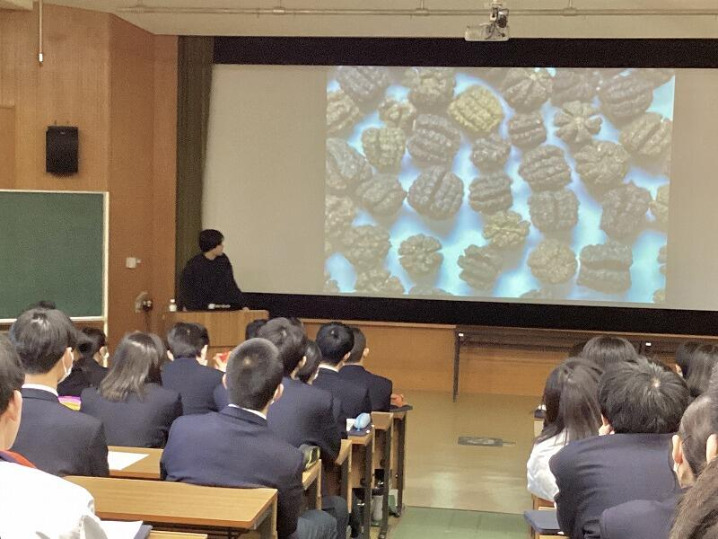
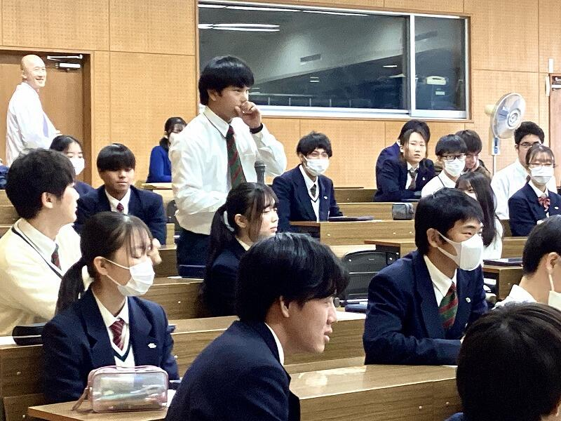

SAGANO BLOG
2024年10月30日
10月21日、京都大学大学院農学研究科の丸岡毅さんに御来校いただき、本校の専修コース２年生に表題のタイトルで御講義いただきました。丸岡さんは、本校の2014年度卒業生で、現在は博士後期課程で化学生態学を専攻しています。

丸岡さんは、「蛾のフンからお茶をつくる」というユニークな研究が注目されており、その成果の1つとして商品化された「虫秘茶」は、一流の料理人にも高く評価されています。メディアからも注目され、NHKの人気番組にも出演されました。

今回は、さまざまな葉を餌とした蛾の糞のサンプルの意外な良い香りに驚かされたあと、蛾が葉を消化する過程で起こることや、虫の種類によって生じる違いなど詳細な分析結果について御講義いただきました。また、分析に用いた機器とその測定原理についても詳細に説明いただき、現在の学びが将来の研究につながっていることを実感できました。


御講義後は、研究内容の他、なぜ博士課程に進まれたのか等、様々な質疑応答が行われ、これからの進路を考えるにあたって大変有意義な時間となりました。


2023年12月15日


12月14日（木）７限のＬＨＲにおいて、２年生を対象に卒業生講話を行いました。本校の卒業生計６名が、文理別に受験勉強における経験談や、大学生活の様子や学部・学科の魅力など、貴重な生の声を在校生に向けて語ってくれました。
生徒達も、先輩からのメッセージにメモを取りながら真剣に耳を傾けており、まず何に取り組むべきか具体的に自分のやっていくべき事に考えをめぐらすよい機会となりました。
２学期後半になり、様々な進路関係の行事に取り組んでいます。いよいよ受験生への変革に向けて、主体的に学ぶ姿勢を深化させることに期待します。
2023年12月13日
外務省...。お仕事の想像が難しいので略歴をご紹介させていただきます。

田中 宏明さん
2011年3月 京都府立嵯峨野高校卒業
2015年9月 京都大学法学部卒業
2016年4月 外務省入省
2016年5月 軍縮不拡散・科学部軍備管理軍縮課
（核軍縮に関する取組、オバマ大統領の広島訪問、NPT運用検討会議等の大型行事）
2018年4月 米国研修（デューク大学ロースクール留学）
2020年4月 ポーランド大使館二等書記官
（情報収集・働きかけ、対EU関係、ウクライナ情勢対応、大臣訪問対応）
2022年4月 中・東欧課（ウクライナ情勢対応）
2022年6月 南米課（南米１０カ国所掌、要人の訪問・来日の大型行事、国連総会等の国際会議）
...ますます遠い存在に感じます。田中先輩を前に最初はガチガチのみなさん。

しかし、ここから田中先輩のすごさを教員共々、思い知ることになるのです。
外務省に勤務するためには、語学や国際法等の知識ももちろん大切ですが、田中先輩はその知識を活かすためのコミュニケーション能力の大切さも教えてくださいました。大使館等海外の勤務地で、重要かつ正確な情報をいち早く入手するためには、様々な方との日頃からのコミュニケーションが大切であり、そのために人間関係のメンテナンスを意識的に行っておられるとのこと。


身振り手振りを交えて、熱くお話しいただいた結果、終盤には生徒のみなさんはこの表情！


外務省という難しいお仕事の紹介でしたが、信頼は安心に繋がるようで、笑顔の絶えない講演となりました。後輩へのメッセージとして、以下３つのことを教わりました。
・世界に目をむけよう。
・問題意識を持って、好奇心と情熱を胸に。
・「夢」を諦めないで、迷ったらワクワクする方へ。
講演後、心に火のついた様子の生徒が...
これからも嵯峨野高校は生徒の皆さんを通じて、教育で世界とつながっていきます。『迷ったらワクワクする方へ』飛び立て！嵯峨野高生！！
2023年12月13日
今週は卒業生が講義に来てくれる、嬉しい授業が続きます！
第一弾は12月13日（水）1,2時間目、『サイエンスレクチャー2023』！！

丸岡さんは生物間（虫と植物など）相互に作用する化学因子に注目して、
メカニズムを解明する研究をされています。
その研究から生まれたのが...今注目の『虫秘茶』！！
なんと虫（蛾の幼虫）のウンチでできたお茶なのです！！
そして...そのウンチ！

おっかなびっくり実物の香りを嗜む生徒のみなさん。しかし、無意識のうちにウンチの匂い方も手で空気を鼻孔に送る理系作法です。
あまりの芳香に「桜餅の香り！飲んでみたい！」「このまま食べられる！」との声も。
このメカニズムをどのように解明するのか、分析の方法も教わりました。
ここがサイエンスレクチャー！
生徒から研究の今後の展望や社会的な展開などの質問を受け、丁寧にお答えいただきました。その最後に「この研究の意義は何より、自分が一生楽しめる研究を見つけたということです」とお話しされたことがとても印象的でした。講義後「好奇心が既存の常識を上回ったのはいつ頃からですか？」とお尋ねしてみると「僕は馬鹿になれることが、かっこいいことだと思っています。そうなれたのは高校2年生のときです。受験勉強がきっかけで、人の目を気にせず、やりたいことに真っ直ぐ努力できる人になりたいと思いました。」とのことでした。
生徒の皆さんが一生懸命質問しているとき、嵯峨野生の好奇心が育っているのを感じました。この講演を企画した先生の顔はとてもうれしそうでしたよ。

どうか皆さんも好奇心を味方に、無限の可能性で嵯峨野から大きな空へ羽ばたいてください。
2023年10月26日
10月26日 第二学年研修旅行その13
予定通り、伊丹空港に到着しました。最後にバスに乗って京都駅まで戻ります。
全日程、天気に恵まれ、雨が降ることもありませんでした。研修旅行が生徒たちの素敵な思い出となり、旅行を通して学んだことをこれからに活かしてくれることを期待しています。
今夜はゆっくり休んでください。
2023年10月12日
卒業生からのメッセージ
西村春輝と申します。
2007年に嵯峨野高校普通科I類を卒業しました。
略歴
嵯峨野高校卒業後、佛教大学教育学部臨床心理学科に進学し、その後筑波大学大学院人間総合科学研究科心理専攻に進学しました。そのまま大学院で心理学の博士号を取得した後、量子科学技術研究開発機構で3年間、博士研究員として勤務した後、現職の大原記念労働科学研究所で研究員をしています。
高校時代の様子
大学院から今まで、研究者として活動を続けてきた私ですが、実は高校時代は勉強を完全に放棄していて、色々な方々に心配されていました（その節はご迷惑をおかけしました...）。部活（剣道部）は楽しかったので、毎日部活のために通っていましたが、定期試験はほぼ赤点で、2年生の時は、生物と英語と数学が5段階評価で1、残りは全て2か3という有様で、当時は研究者になることなど全く考えられませんでした。
そんな私ですが、3年生になる頃にカウンセリングの仕事に興味を持ったことがきっかけで、臨床心理士を目指しました。元々、仕事をするなら人の役に立つ仕事がしたいと思っていたのですが、根が引きこもりの私の性格とカウンセリングのような仕事が合っていそうだなと思ったのです。なお、心理学を使って「心の問題（悩みや心の病気）」を扱う仕事をするための資格として、当時は臨床心理士が最も主流でしたが、数年前に公認心理師という国家資格もできました。
志望校は臨床心理学を専門的に学べる学校にと思い、佛教大学臨床心理学科にしました。当時の自分としては高い目標でしたが、なんとかギリギリ合格することができました。
大学時代
心理学は私にはとても合っていたようで、大学で心理学を勉強しているうちに、研究者になりたいと思うようになりました。そして学部の恩師の勧めもあり、筑波大学の大学院に一浪して入学しました。その後博士課程まで進学し、博士号取得後に量子科学技術研究開発機構の博士研究員として研究を行った後、現在に至ります。
高校時代を振り返って
私の高校時代の過ごし方は、どう考えても効率が悪く、研究者という職業に就く上では大きな回り道をしたなと思います。私は高校生の頃から「楽しくないことはやらない」「納得できないことはやらない」という思いが強かったと思います。その頃は将来の目標もなかったので、「やりたい事がないのに勉強してもしょうがない」と極端なことを思っていました。
今でも勉強は嫌いですが、高校時代に勉強していなかったことを後悔することも多いです。学部生のころは論文の内容を理解して執筆するための英語やデータ分析をするための数学を勉強し直す必要がありました。今でも、必要な解析方法を理解するのにとても時間がかかります。漢字の読み方を間違えているのではないかといつもハラハラしています。でも同時に、回り道をしたから今の仕事や生活があるのかな、という納得感もあります。
心理学と現在のお仕事
ところで、皆さんは心理学にどんなイメージを持っていますか？大学の心理学の講義で心理学のイメージを尋ねると、「メンタリスト」「人の心が読めそう」「プロファイリング」「カウンセラー」「心の病を治す」のようなものがよく挙げられます。
実は、学問としての心理学は、これらのイメージとは、かなり乖離があります。たとえば、基礎的な心理学のテキストでは、脳神経系の情報伝達の話や、脳のそれぞれの場所はどんな働き方をしているのか、についての解説から始まります（当時は「洗礼」と呼んでいました）。理系っぽいですね。脳神経系の基礎を学んだ後、知覚、記憶、感情、集団行動、心の疾患など、人間の行動に関する科学的知識について学び、人の心を読むようなテクニックは悲しいことに学ぶ機会はありません。
特に多くの学生が苦労しやすい一方で、「ハマる人はハマる」のが、統計学と調査・実験の手法についてです。大学は研究をするところですから、心理学で心のメカニズムについて研究するためには、これらの技術の習得は避けて通ることができません。いわゆる文系に属する学生にとっては、統計学や実験は苦労しやすいところです。もちろんそのことは先輩や大学の教員も重々承知であり、また自らが経験してきたところですので、教え方を工夫したり、色々なサポート体制があることも多いです。そのような体制があったので、私も学部生の時に理解することができました。
大学院の研究と現在の仕事について
大学院では、簡単に言うと、「ネガティブな思考」について研究を行いました。どんな人でも、落ち込んだ時には、自分についてあれやこれやと考えてしまいます。心理学では、自分について繰り返し考え続けることを「反すう」と呼びます。反すうは誰でも起こり得るものなのですが、それが何時間も何日も続いてしまうと非常に苦しいです。そのため、私は大学院で、何故、このように考え続ける人とすぐに考えを辞められる人がいるのか、について研究を行いました。
ヒトは、絶えず、何かに注意を向けています。たとえば、授業中をイメージすると、先生の話、窓の外の景色、近くの席の友達の話声、最近面白かった漫画のことなど、同時に様々な刺激に注意を向けており、その対象は絶えず変化しています。また、同時に色々な対象に注意を向けてはいますが、そのバランスは様々です。先生の話に100%注意を向けていることもあれば、趣味のことと先生の話の割合が8：2くらいの時もあるでしょう。集中できないときに、自分から「よし勉強をしよう」と思っても、うまく先生の話に注意を向けられず、つい別のことを考えてしまうこともあるでしょう。このように、注意というのは自発的なコントロールが難しいものであることは、皆さんも実感していることと思います。
そこで、我々ヒトは注意を望むところに向けられるように、自分の意志ではなく様々な「条件」を整えます。たとえば、「図書館に行く」、「机の周りを整理整頓して気が散らないようにする」、「タイマーをセットして勉強時間を決める」、などです。心理学では、様々な実験を行って、ヒトはどのような条件で注意を向けることができるのか、あるいは向けられなくなるのか、についての研究が積み重ねられてきました。それによって、ヒトの注意のメカニズムもある程度わかってきています。私の研究では、反すうをよくする人と、よくしない人の注意の特徴について、様々な条件で実験を行うことで、そのメカニズムを調べ、博士論文を書きました。
心理学を生かした仕事
このような大学院での研究の経験は今の仕事にも活きています。皆さんは、間違えた時やうまくいかなかった時、「もっと集中しろ」「注意力が足りない」などと誰かから指摘されたことはありますか？人生で全く言われたことのない人はおそらくいないでしょう。しかし、上述のように、注意を向けられるかどうかは、その時の条件（体調や経験も含む）によって大きく変化するので、「集中しろ」と言われても、その条件が変わらないと集中するのは難しいのです。多くの人が「失敗をしない人はいない」ということは頭では理解してはいるのですが、その一方で、多くの人が「集中できなかった」条件には目を向けず、このような言葉をかけるだけで何とかしようとする態度を持っています。授業の話だけであればそのような態度を持っていても、誰かが怪我をしたり、亡くなったりすることはありませんが、製造業や建設業などの危険を伴う仕事では、ちょっとしたことで大きな事故につながることがあります。また、商品の品質に大きな影響を与えるかもしれません。一度の失敗の影響が大きいので、失敗を予防するための効果的な制度や対策をとる必要があります。それは、工学的な設備だけでなく、どのようなルールで運用するのか、どのように人々が働いているのかという心理学的な側面を知らないと、良い制度や対策は作れません。
今の仕事は、心理学に基づくヒトの一般的な行動原理を活用して、働く人々の安全や心身の健康に関する調査や研究を行っています。まだこの分野の仕事を学び始めたばかりなので、勉強することばかりですが、これまで取り組んできた心理学やデータ分析の方法を使った専門的な仕事ができて、とてもやりがいを感じています。勉強は相変わらず嫌いですが、心理学と今の仕事は好きなのでなんとかやっています。
最後に、本記事を読んで心理学に興味を持った方は、日本心理学会が主催している「高校生のための心理学講座 YouTube版」を是非ご覧ください。心理学の分野は非常に幅広いので、この中に気になる分野があれば是非、心理学部や心理学科の受験を検討していただければと思います。（「洗礼」を受けずに済むことでしょう」）
「日本心理学会 心理学に興味のある方へ」
https://psych.or.jp/public/
「心理学ミュージアム」
https://psychmuseum.jp/
「高校生のための心理学講座 YouTube版」
https://psych.or.jp/interest/lecture_hs/

初めて心理学実験室が創設されたドイツのライプチヒ大学にて
2023年09月28日

{kind=link}
{kind=link}
{kind=link}
{kind=link}
{kind=link}
{kind=link}
{kind=link}
{kind=link}
{kind=link}
{kind=link}
{kind=link}
{kind=link}
{kind=link}
.jpg){kind=link}
{kind=link}
{kind=link}
{kind=link}
{kind=link}
{kind=link}
{kind=link}
９月２８日（木）７限に２学期の学年アッセンブリーを行いました。今回は、この３月に本校を卒業し難関大学に進学した３名を迎え、１年生の下半期に向けた学習を中心とした生活のあり方や、難関大学の魅力などについて話をしてもらいました。９月は文化祭・体育祭など大きな行事がある中で、学習への切り替えがなかなか難しい時期でもありますが、今日の話を聴いて意識が大いに高まったようでした。授業への取り組みや、学習習慣の確立といった、一見ごく普通の内容に関する話についても多くの生徒が共感できる点が多く、身を乗り出して聴いている生徒も多く見られました。
2023年07月26日
卒業生からのメッセージ
初めまして。2016年度に京都こすもす科共修を卒業しました、中瀬英郁と申します。
昨年度、北海道大学大学院 水産科学院の修士課程を修了し、今年度、同大学院の博士後期課程に進学しました。現在は魚類の生殖生理学を専門とし、ニホンウナギの「性分化」における分子的なメカニズムに着目した研究に取り組んでいます。
{kind=link}
函館の隣町、七飯町の実験所に設置されたウナギ飼育水槽
（一見ゴミ置き場のようにも見えますが、自然に近い環境でストレスを与えないよう育てるため、わざと手を加えていません。実際、この中でシラスウナギを育てるとメスに分化する個体が出てきます。）
⦁ なぜ、ウナギなのか
私は幼少期から生き物、特に魚が大好きで、川で魚を捕まえては家に持ち帰って繁殖させる、ということを趣味としていました。中学時代に自分の将来について考えるようになり、好きなことをして社会に貢献したい、と考えがまとまったのが高校入試の頃でした。その際、数年前にウナギの完全養殖が達成されたことや、天然ウナギの卵が世界で初めて見つかったことが報道されていたことを思い出し、ウナギの増養殖研究に追い風が吹き始めていることに気が付きました。また、完全養殖は達成されたものの、市場流通に向けた課題は山積みである、ということを知り、自分が活躍できる余地があると考えました。そこで、自分の夢は「ウナギの完全養殖を実現する研究に携わること」となりました。
夢を追いかけ、北の大地へとやって来たわけですが、一口に「ウナギ」と言っても、研究分野は多岐にわたります。冒頭でも述べた通り、ウナギは複数個体で飼育すると、ほとんどの個体が「オス」になってしまいます。どうしてそんな不思議なことがウナギでのみ起こるのか、その神秘に魅せられて、私はウナギ研究の道に足を踏み入れました。
⦁ ウナギならではの難しさ
{kind=link}
シラスウナギ
（年々価格が上がっており、今年は1匹2000円以上するそうです）
我々日本人がよく知るウナギは天然・養殖を問わず、全てが天然のシラスウナギ（ウナギの赤ちゃん）が成長したものです。シラスウナギの資源量は近年激減していることから、完全養殖の実用化、天然資源の保全が求められていますが、それには高い壁がいくつもあります。
完全養殖を実用化する上で、ウナギを人の手で殖やす必要がありますが、その際の課題として、「複数個体で飼育するとほとんどの個体がオスになる」、「何もしなければ成熟しない」、「卵を産ませるのが大変」等が挙げられます。近年、それぞれに対して商業利用を見据えた解決策が見出されつつありますが、「複数個体で飼育するとほとんどの個体がオスになる」ことに対しては、未だ有効な解決策は確立されていません。
この「オスになる」原因を突き止めるため、私はウナギの「性分化」における分子的なメカニズムを明らかにしたいと考えています。
{kind=link}
実験台の上のウナギと私
（麻酔をかけておとなしくなったウナギにホルモンを注射しようとしているところです。）
⦁ 「性分化」と「ストレス」
「性分化」とは、動物の成長に伴い、性が決まっていない生殖腺が卵巣または精巣に分化する過程のことを指します。つまりメスかオスになる過程のことを言います。性分化には、生殖腺の分化に影響を与える遺伝子の発現が雌雄間で変動する「分子的性分化」のフェーズ、および雌雄で異なる遺伝子発現の影響を受け、生殖腺の見た目が変化する「形態的性分化」のフェーズが存在します。この、「分子的性分化」のフェーズに雌性ホルモンが産生されると、生殖腺は卵巣に分化する一方、雌性ホルモンの産生が抑制されると生殖腺は精巣に分化すると考えられています。
{kind=link}
生殖腺の組織観察画像
（直径100 μmから200 μmの丸いものがたくさんみられますが、これは卵の元である「卵母細胞」と言います。卵母細胞がみられることから、この生殖腺は形態的に卵巣に分化していると言えます。）
ウナギでは、飼育密度、すなわち他個体の存在による「ストレス」が、雌性ホルモン産生を抑制すると考えられています。それが原因となり、「普通に飼ってもほとんどの個体がオスになる」と考えられますが、その分子メカニズムは明らかになっていません。そこで私は、何が卵巣分化を誘導するのか、そして「ストレス」がどのように卵巣分化を阻害するのか調べています。
⦁ 「ストレスでオスになることの問題点」
ウナギはストレスでオスになってしまうことから、エサに雌性ホルモンを混ぜて無理やりメスを作出しているのが現状ですが、これには問題があると私は考えています。
それは、本来遺伝的にオスである個体に雌性ホルモンの投与をしてしまい、無理やりメスにしてしまう可能性があるということです。ウナギに遺伝的な性があるのかについては未だ明らかになっていませんが、仮に遺伝的な性があった場合、遺伝的オスまたは遺伝的メス同士を交配させてしまう、ということになってしまいます。この交配は、次世代のシラスウナギに、本来の遺伝的なオスとメスの交配では生じない、遺伝的な性の偏りを生じさせるおそれがあります。資源保護のため、そのシラスウナギを種苗放流した場合、自然界でストレスやホルモンの影響を受けずに、遺伝的な性に従って性分化してしまうことが予想されます。すると放流されたウナギはオスばっかり、もしくはメスばっかり、ということになってしまいます。これでは再生産が上手く行われず種苗放流の効果が薄れてしまいます。そこで「ストレスでオスになる」原因を突き止め、ストレスの影響を受けないウナギを作出できるようにすることで、資源回復に寄与したいと考えています。
⦁ 「何が雌性ホルモン産生を抑制するのか オス化の謎に迫る」
修士課程では、卵巣において高い発現がみられる因子が雌性ホルモン産生を活性化する一方、精巣において高い発現がみられる因子が、卵巣で高い発現がみられる因子と拮抗することによって、雌性ホルモン産生を抑制することを初めて明らかにしました。今後、それら因子とストレスとの関係を調べることで、その分子メカニズムを明らかにできるかもしれないと考えています。オス化の謎を突き止めて、雌性ホルモンを与えなくてもメスが作出できるようにする、そんな大きな野望を抱きながら、地道に実験を積み重ねていこうと思います。
⦁ 道は選べる方がいい
高校生の皆さんの中には、今まさに「やりたいこと」を探している人がたくさんいらっしゃると思います。そんな人にとって、自分の将来を想像することはとても難しいことだと思います。将来に不安を抱える人に私からアドバイスできることは、「あまり興味の範囲を狭めない方がいい」ということです。
私の場合、高校入学以前から自分のやりたいことがある程度定まっていましたが、当然、将来望んだ通りになるかもわかりませんでしたし、迷いもありました。そんな不確定な自分の将来に、何があっても困らないように、色々な未来を想像しました。そのためには、広く様々なことに目を向ける必要がありました。
具体的には、知らないことを見つけたときに、それについて少し学んでみるようにしました。すると、それまで面白いと思えなかったことでも、好奇心をかき立てられる事柄が隠れていることがわかりました。「好きなことをしたい」と考えていた私は、興味の範囲が広がったことで、ウナギの研究ができなくても何とかなりそうだ、と思うことができました。それと同時に、途中で他の道に移ることもできるのだから、今は安心して夢に一直線に向かって行っていこうと決意を固めることができました。
今考えると、何かきっかけさえあれば、他の道に進んでいてもおかしくなかったと思います。実際、修士課程在籍時には、他の道に進むことも考え就活にも取り組みました。その上で進学を選択したのは、どうしても今の自分に課せられたテーマを納得できるところまで終わらせたかったからですが、仮に他の道に至っていても、後悔することはなかったと思います。なぜなら、どの道も自分が面白いと思ったことだったからです。
高校生の皆さんはこれから人生の岐路に立つたびに、大いに迷うことでしょう。そんなとき、色々な道を比較して選べるとしたら、選んだ道にきっと愛着を持つことができると思います。人生を振り返って後悔することのないよう、これから夢を探す人はもちろんのこと、既に夢を持っている人もぜひ、自分の興味の範囲を狭めないようにしてみてください。（中瀬）
ウナギの増養殖の研究に興味を持たれた方は、こちらのHP（https://repun-app.fish.hokudai.ac.jp/course/view.php?id=131）を是非ご覧ください。ウナギの他にも、北大で行われている海の生き物や海に関する研究についてわかりやすく紹介されています。
2022年12月26日
スピンオフ "先輩からのメッセージ"
先日「先輩からのメッセージ」に寄稿していただいた松井さんは現在大手自動車会社の人事部にお務めです。お仕事柄、多くの学生と出会われ、人材育成に携わっておられます。
そこで嵯峨野生が進路を考える際のヒントになればと思い、メッセージを送っていただいた後にお聞きしてみました。
質問：現在求められる人材はどのような人材ですか？
『いわゆるVUCAの時代、正解を教えられる時代から、自ら正解を考え、創り出すことが大切な時代に大きく転換しています。
上位者や周囲からの指示を待つのではなく、自分なりに考え、その考えを臆せず表出すること、間違ってもよいので、自分の考えを行動に移すことが大切だと思います。
行動を起こすと、失敗することの方が多いのですが、失敗を恐れずチャレンジすること、そのような姿勢が大切です。
失敗から学ぶことも多いはずです』
このお話は企業の立場から、求められる人材（対象は大学生）についてのものですが、高校時代の学び、いや高校生活すべてにも当てはまるものではないでしょうか？
所属するラボや部活動においても、様々なことにどのように向き合い（姿勢）、行動できるか？
成長（＝変化）を求めて、いろんなことに、挑戦してみよう。
{kind=link}
2022年12月10日
先輩からのメッセージ
12月８日の続き
京都こすもす科 人文芸術系統2002年卒業 松井翔太

◆私が考える仕事の面白さ
Hondaには、挑戦を後押しする文化があります。失敗することを恐れるのではなく、挑戦することを尊重し、たとえ失敗したとしても、その過程での学びを次の挑戦に活かすことで、成功や自身の成長が待っているということです。
私が担当する「人事」とは、「人（の心に関する）事」だと思っており、社員一人一人の考えや想いを、どうやって商品やサービスに繋げられるかを考えながら仕事をしています。人の心や考え方には正解は無く、正解が無いことと向き合う難しさはありますが、難しいからこそ上手くいった時には働きがいや、達成感を感じることができます。
社員の採用に関する仕事をしていた時は、「どうなるかじゃない、どうするかだ。」を学生に向けたメッセージにしていました。上司に言われたことを"こなす"だけでは、やりがいも感じられません。「私はこうしたい、なぜならこう想う」という意志を込めた仕事をすることで、やりがいや、成長を感じられるはずです。成り行き任せの人生を歩むのではなく、ご自身の想いや
やりたいことを大切にしてください。自分なりの想いを込め、仕事を楽しむことが、仕事の面白さに繋がるはずです。
＜ご参考：NHKに取材を受けた際の記事です＞
https://www3.nhk.or.jp/news/special/news_seminar/tantou/tantou24/
◆皆さんへのメッセージ
良い大学に入りたい、良い会社に入りたい。私も昔はそう考えていました。でも、「良い」という尺度は人それぞれ違います。偏差値や社会的評判という表面的な事に捉われず、皆さん自身が「良い」と感じるのは何かという感性や価値観を大切にしてください。
そしてご自身の価値観は、色々な経験や体験を通じてはじめて気付くものだと思います。
専門外のことを勉強する、部活に取り組む、海外に留学する、異文化に接するなど、取り組むことは何でも構いません。興味の幅を狭めず好奇心と探求心を持つことで人生の選択肢が増え、皆さんの生活が充実したものになるはずです。
失敗を恐れることなく、むしろ失敗を楽しむ気持ちを持って、学生のうちにしかできない様々なことにチャレンジしてください！
2022年12月08日
先輩からのメッセージ
今回の先輩は在学中ラグビー部に所属し、部活動のみならず、学校行事、そして学習に、高校生活の全てに全力で取り組んでいた先輩です。特に体育祭での活躍は印象的です。
はじめまして。
京都こすもす科 人文芸術系統(当時)を2002年に卒業した松井翔太と申します。
大阪市立大学(現 大阪公立大学)を2006年に卒業し、本田技研工業株式会社(Honda)で人事の仕事をしています。
◆嵯峨野高校での学び
①公立②家から近い③高いレベルで勉強できる、ことが嵯峨野高校進学の理由でした。今思えば何も考えていないですね...
私は3年間同じクラスで学び、非常に個性的なクラスメイトに囲まれ、多様性に富んだ環境でした。人には色々な考え方や背景があり、そのどれもが間違っていない、個性の違いを活かすことが、クラス(チーム)の力や一体感に繋がることを学びました。個性の大切さを学んだことは私の就職先決定にも繋がっています。
また、勉強だけで頭でっかちになりたくないと思い、高校ではラグビー部に3年間所属しました。練習のつらさしか覚えていませんが（笑）、卒業後も同期で集まるなど、切磋琢磨した仲間との繋がりは私の財産です。３年生の11月頃の引退試合には、受験勉強の合間を縫ってクラスメイトが駆けつけてくれたことも良い思い出です。
ラグビーはチームスポーツですから、自分の行動が周囲にどういう影響を与えるかという集団の中での振る舞い方やコミュニケーション力、つらさを一緒に乗り越える仲間の存在の大切さを学ぶことができました。勉強は大切ですが、他の活動での経験を積むことや多様な価値観に触れることが、その後の人生の大きな糧になるはずです。最近は部員が少ないと聞いていますが、部活動をはじめとした様々な活動にも積極的にチャレンジしてください。
{kind=link}
{kind=link}
◆大学での学びと就職活動について
①国公立②自宅から通える③偏差値ができるだけ高いところ、が大学選びの理由です。考え方は成長していませんね...
神戸大学が第一志望でしたが受験に失敗し、大阪市立大学 経済学部に進学しました。今思えば受験に失敗して良かったと感じます。仮に神戸大学に入学できていたら、結果に満足してその後の努力を怠ってしまっただろうと思うからです。自分の満足いく結果を得ることは重要ですが、失敗から学ぶことや、失敗した経験を活かすことの方が大切だと考えます。
大学には片道2時間弱かかり、単位を取るのに精一杯だったので、部活やサークルには所属しませんでした。サークルに入り学内での交流を深めておけば良かったと少し後悔しています。大学では中国経済ゼミで学び、成長途上の中国市場の勢いを体感したことで、グローバルに活躍できる会社に入って自分の力を試し、成長したいと強く感じたことを覚えています。
文系の私でも、アイデアや仕事がカタチになることが仕事のやりがいになると思い、メーカーを中心に就職活動をしました。メーカーの中でも、父親が自動車教習所で働いていて馴染みがあったことや、ビジネスの規模（＝仕事が与える影響力の大きさ）という点で自動車業界が第一志望でした。トヨタや日産、マツダなど、自動車メーカーを受験する中で出会ったのがHondaです。
「働くことはしんどい」というイメージしかありませんでしたが、Hondaの先輩社員は老若男女を問わず個性的な人が揃っており、目をキラキラ輝かせて仕事の面白さを語っていた姿に惹かれ「こんな社会人になりたい！こんな社員を生み出す環境づくりをしたい！」という想いで、Hondaで人事の仕事に携わることになりました。
次回に続く
2022年11月29日
先輩からのメッセージ
11月28日からの続き
2017年 京都こすもす科 共修コース人間科学系統卒業
外波山 叶絵
冒頭（先日掲載）でも触れたように、私は当時法曹界への強い憧れがあり、法学部に行くということだけは決めていました。その他は自宅から通えることやキャンパスの雰囲気など、諸々加味して大阪大学に進学することに決めました。いざ大学に入ると、部活やアルバイト、友人付き合いなど一気に世界が広がったことが新鮮で楽しく、体育会陸上部でのマネージャー活動を生活の軸として、飲食店や塾でのアルバイト、友人との飲み会、学生団体での活動などとにかく面白そうだと思った環境を飛び回る毎日でした。結果としてあまり勉学には力を注げませんでしたが、自由な時間の多い大学生の特権を活かし、社会人になった今どれだけお金を払っても得られないような経験が数多くできたと思います。
また、将来について考えるうちに、一つの分野のスペシャリストになるよりもジェネラリストでありたいと強く思うようになりました。飽き性な性格もあったため、一つの物事を長く極めるよりも環境や人を変えながら働く方が向いていると気づいたのです。法曹界ではなく民間企業で働こうと切り替えたのは、私の中では前向きな進路変更でした。
自分の興味のある物事にしか力を注げないタイプなので、就職活動ではとにかく直感的に面白そうだと感じた業界に入ろうと思い、その結果行きついたのがデベロッパーという仕事でした。元々高層ビルや商業施設が好きだったこともきっかけの一つですが、就活を通して様々な仕事を知る中で、「街を作る」というスケールの大きさや後世へ残るインパクトに惹かれ、いつかこうした街や空間作りに携わりたいと夢を抱くようになりました。入社して1年半が経った今でも、新しい開発プロジェクトが発表されると完成を待ち遠しく思い、街で素敵な物件を見かけるとつい足を止めてしまいます。サラリーマンという立場上、希望の部署や仕事内容を全て叶えることは難しいですが、それでも会社の事業にワクワクできるというのは私が働く上で大きなモチベーションになっています。
最後に私が大切にしている言葉を皆さんにもお伝えしたいと思います。就活時代お世話になった先輩から「自分の選択を正解にできるのは自分だけ」という言葉をいただき、以降何かに悩んだ時は必ずこの言葉を思い出しています。自分で決めたことは他の誰の責任にもできず苦しいですが、その分意味のある選択にできるよう前向きな気持ちで物事に取り組めるような気がしています。皆さんはこれから様々な選択を迫られることになりますが、肝心なのは選んだ後の行動だと思います。もちろん不可抗力でどうにもできないこともありますが、そんな時は自ら環境を変える努力をすることも一つの選択肢だと思います。狭い世界にこだわらず、視野を広く持って自分のやりたいことを探してみて下さい。将来に繋がるような興味や関心は案外思わぬところに転がっているものなので、このブログをはじめ、様々な分野で活躍されている卒業生の方々の話を是非聞いてみてください。私もまだまだこれからですが、皆さんの高校生活が実りあるものになるよう陰ながら応援しています！
{kind=link}
2022年11月28日
先輩からのメッセージ
今回、メッセージを寄せてくれた先輩は、高校時代から一つの目標を持っていました。心の中の強い信念を、時折垣間見ることもありましたが、決して頑なではなく、柔軟に様々な意見を聞く姿勢を持ち合わせていました。にこやかな表情も併せて、周りの友人、教員からいろいろと助言を受ける機会が多い高校生活だったと思います。決して安きに流されるのではなく、その時その時できることに懸命に打ち込み、そのうえで判断できる高校生でした。
こんにちは。2017年に京都こすもす科共修コース人間科学系統を卒業しました、外波山叶絵と申します。
大阪大学法学部を卒業後、総合デベロッパーと呼ばれる業界で就職し、現在社会人2年目になります。先日数年ぶりに当時の担任の先生よりご連絡をいただき、高校時代を懐かしく振り返りながらこの記事を書いています。先に断っておきますが、私は学生時代にこれといって成績優秀だった訳でも、課外活動で特出した成果を残した訳でもありません。特別なお話はできませんが、私も皆さんと同じように夢や進路に迷った3年間を過ごしていましたので、何か少しでも参考になることがあれば幸いです。
{kind=link}
現在私が働いている総合デベロッパーという仕事は聞き慣れないかと思いますが、いわゆる「街づくり」や「都市開発」を行う不動産会社です。扱うものは様々で、オフィスビル、商業施設、住宅、ホテルなどの開発・運営や、街一体となって行う再開発事業などがあります。入社後の1年間は住宅部門で新築マンションの営業販売を、この4月からは東京にある本社の法務部へ異動し、企業法務にまつわる仕事をしています。
実をいうと、私は中学生の頃から検察官になりたいと思っていました。その想いは高校3年間変わることなく、卒業後は迷うことなく法学部へ進学しました。そんな私がなぜ今、全く違う仕事をしているのか、学生時代を振り返りながらお伝えしたいと思います。
高校を卒業したのが5年以上前かと思うと時の流れの速さに驚きますが、当時のことは今でもよく覚えています。勉強に部活にとかなりハードな日々でしたが、目の前のことに夢中で向き合った時間は非常に濃く充実していました。そして、高校では尊敬できる友人に数多く出会うことができ、各方面で刺激を受けることばかりでした。高校は公私ともに悩みが尽きない3年間かと思いますが、友人の何気ない一言に救われたことが幾度となくあります。当時の友人とは今でも交流があり、各々の仕事やプライベートの話を共有できる貴重な存在です。また、どんなに小さな悩みでも親身に相談に乗っていただき、時に自分以上の熱量で向き合って下さる先生方がいたことも大きな支えでした。勉強に身が入らず成績が低迷した時期に、進路相談で喝を入れていただいたことを今でもよく覚えています。嵯峨野は公立高校ですが、志望大学のレベルに沿ったカリキュラムや補習、サポートして下さる先生、勉強に集中できる施設など、非常に恵まれた環境が揃っていました。もし中学生の頃に戻ったとしてもまた嵯峨野高校を選びたいと自信を持って言えるほど、充実した3年間だったと思います。
{kind=link}
勤務地付近
次回に続く
2022年11月10日
先輩からのメッセージ
「進路選択」、 高校時代を通じて最も大切かつ難題です。将来の自分を思い描き、そこへ到達するための距離の長さ、越える壁の高さに呆然としたり、そもそもやりたいことが見つからない焦りを感じたり。いつの時代の高校生もそんな葛藤を感じながら、日々を過ごしています。将来像と現在の思いとのギャップに悩んでいる人も多いでしょう。今回の先輩はそんな後輩に寄り添い、高校生目線で自らの経験からアドバイスをしてくださっています。彼女の高校時代、何事にも真摯に向き合っていた眼差しの先には道が広がっていました。
こんにちは。京都こすもす科人文芸術系統※2003年卒の村山由起と申します。
大阪大学人間科学部を卒業後、現在は、自治体職員として、地域振興やNPO協働などに携わっています。
※人文芸術系統は現在学科改編をして、人間科学系統に統合されています。
{kind=link}
小天橋
現在の勤務地は日本海に面する丹後です。さて、この写真はどこの写真でしょう（天橋立ではありません）
高校を卒業して早20年。高校生の頃、今のような仕事をしている自分は、想像もしていませんでした。当時、なんとなく、なりたい職業として思い描いていたのは「保健室の先生（養護教諭）」。第三の居場所のような、しんどくなった時に寄り添える人間関係・場所をつくるような仕事ができればいいなと思っていました。
しかし、私の行きたい学部では養護教諭の免許がとれず、資格優先で大学を決めるか、資格を諦めて学びたい分野に進むかに迷い、結局、「高３のタイミングで職業を決めてしまわず、学ぶことを楽しめそうな方を選ぼう」と、資格のとれない「人間科学部」に進学しました。
人間科学部で、心理学・教育学・社会学をベースに、様々な授業を受ける中で、印象に残ったのはボランティア（volunteer）という言葉との出会いです。先生曰く「ボランティアの"Vol"は、英語の"will"、つまり意志をもって活動する人だ」と。「ボランティアとは『（目の前の誰かを）放っておけない・なんとかしたい』思いが行動になったものであり、『公平・平等』とは相容れないものだ」とも。
その言葉に惹かれるものがあって、専攻はボランティア人間科学を選択し、知的障がい児の普通高校進学（インクルーシブ教育）に向けて社会運動に関わるお母さんや、制度化を進める自治体職員に話を聞いて、卒業論文を書きました。
進学校で学び、受験競争に挑んできた自分が、「知的障がい児の普通高校進学」を卒論テーマにとりあげる矛盾を感じつつ、自身が心の底から楽しんだ高校生活を、誰もがそれぞれ満足に経験できるには、社会はどうあれば良いのだろう...と考えながら書き進めました。何が正しいのか、どうすべきか、答えは出ませんでしたが、ただ、知的障がい児の普通高校での受入が限定的にでも実現したのは、声を上げるお母さんや、それを真摯に受け止める教育委員会の職員がいたからこそだと思いました。
「なんとかしたい」思いを受け止め、良い実践を重ねるため、NPOと行政との橋渡し役になれたらと思い、大学卒業後は自治体職員になりました。
最初の部署では、元養護教諭の先生や地域団体の方達と一緒に、ひきこもり相談チームの立ち上げに関わりました。その後の地域活性の部署でも、親子や高齢者の居場所づくりを支援したり、NPOと行政の協働研修を主催したりし、今もそれに近い仕事をしています。振り返ってみれば、高校当時に思い描いていたよりも、理想に近い働き方ができているような気がします。
大学進学時に養護教諭の免許がとれる道を選んでいたら、どんな人生だったのだろうと、時々思います。きっと、また別の充実した時間があったのだろうと思いますが、将来の夢や目標は、見える世界が広がれば、どんどん変わっていくものだと知り、もしも、もう一度、高校３年に戻れたとしても、「学びたい・知りたい」気持ちを優先したいなと今思います。
目標に近づくのもワクワクしますが、目標が広がるのも、とてもワクワクするものです。
これは、まだ保育園児の自分の子にも、伝えていけたらと思うことですが、「未来のために今を犠牲にして勉強する」のではなく、その瞬間、その瞬間に興味を持つものを突き詰めて、その時々に感じる気持ちを大切に、「学び」を深めてほしいなと思います。
たとえば高校の英作文の授業で、日本語のニュアンスを英語で上手く表現できなかったり、反対に英語ではバリエーション豊かな表現があるのに日本語訳は一つだったりするとき、文化が違うってこういうことなんだ...などと感じたことは、バックグラウンドの異なる人と協働するときの糧になっています。ただ一対一対応で単語を覚えるだけでは、もったいない。ぜひ無駄そうに思えることにも思いを馳せて、「学び」を楽しんでほしい。
面白いなと思うことを捨て置かず、一生、学び続けていこう、と、自分に対しての励ましも込めて、高校生の皆さんにお伝えできればと思います。
{kind=link}
丹後局
駅からみた職場。北陸ほどではありませんが、冬は雪が降ることもあります。
（運転が苦手なので、雪が降ると列車通勤。ローカル線の維持も深刻な地域課題です。）
2022年10月24日
先輩からのメッセージ
10月21日からの続き
2014年 京都こすもす科自然科学系統卒業 隠岐真太朗
皆さんはパイロットに対してどのようなイメージを持っているでしょうか？私は入社するまで、パイロットは飛行機の操縦をして世界中を飛び回るカッコいい仕事で、スーパーマンみたいな人たちに違いないと思っていました(笑) パイロットという仕事は聞いたことがあっても想像するのは少し難しい職業かもしれませんので、私の経験を少しお話しさせていただきます。
私は運航乗務員訓練生として2018年に日本航空株式会社(JAL)に入社しました。地上研修を空港で約1年半行った後、座学とアメリカでの飛行訓練を同期と一緒に約2年行いました。同期というと競い合うイメージかと思いますが、パイロットの訓練では違います。お互いに成功も失敗も共有し協力し合いながら、嬉しいことも辛いことも分かち合ってきた家族のような存在で私の宝物です。現在は副操縦士昇格に向けてあと少しというフェーズにいます。これまでの訓練のことは一言ではまとめられませんが、一人では絶対にここまで辿り着けなかったのは間違いありません。そんな支えてくださる方々のおかげで訓練を進められ、身も心も大きくなれた自分がいます。パイロットへの門戸は文系理系関係なく、皆さんに対して開かれているので少しでも興味のある方はご連絡いただけたら喜んでお答えしますし、もしくはご自身で調べていただけたらと思います。きっと後悔はしないと思います。
{kind=link}
（飛行訓練はアメリカのアリゾナ州フェニックスで行いました。乾燥していて夏は40℃を超える毎日で、かつ一年のほとんどが晴れでした。フェニックスは空が広く、とても綺麗だったのを覚えています。有名な観光地のグランドキャニオンやセドナはアリゾナ州にあります。）
今の私の姿は、高校生の時には自分でも全く想像していなかった姿でした。しかし、間違いなく今までの積み重ねがあっての姿です。高校生の時に想像していた京都大学での自分の姿も、大学生の時に想像していたパイロットになっている自分の姿も、それぞれ最初に思い描いた時の姿は現実とはかけ離れたものでした。自分には無理かもしれない。何度もそう思いました。それでも「京都大学の隠岐です」「パイロットをしています」と語る理想の自分は、私の心の中に自信を持ってキラキラと存在していました。そんなに自信満々に、しかも自分自身に言われたら、そうなれる気がしてきます(笑) そのなりたい自分になるために、綿密に戦略を立て、自分に足りないものは何かを考えて一歩ずつ道を歩んできました。そしてこれからも理想の姿に向けて、私の道はまだまだ続きます。
{kind=link}
（先日の訓練での一フェーズが終わった時の写真です。飛行機を操縦できる喜びと操縦の難しさを感じた訓練でした。）
コロナ禍で当たり前のことが当たり前にできないような状況にもかかわらず、今できることに目を向けて一生懸命に取り組む皆さんを心から応援しています。一緒に力を合わせて、一歩ずつ前向きに進んでいきましょう。
2022年10月21日
先輩からのメッセージ
キャプテンとして部員をまとめ、体育館で躍動していた姿、誰もいない教室に残って、一人黙々と自習をしていた姿、どれもが彼の本当の姿です。高校時代、何事も諦めずに、理想を求め、一つ一つ地道に努力を重ねていた姿が印象的な先輩です。
皆さん、こんにちは。2014年に京都こすもす科自然科学系統を卒業しました、隠岐真太朗と申します。
突然ですが、皆さんに「自分はこうなりたい！」と思う姿はありますか？具体的な将来の夢の姿でなくても構いません。部活の試合で相手に勝つ姿や、次のテストで目標の結果を取る姿、後輩から目標にしてもらえるような自分の姿など、どんなことでもいいので思い浮かべてみてください。どうでしょうか？成功した時の姿を思い浮かべるといい気持ちになれますよね(笑) そうしたら、次はその何かを成し遂げたカッコいい自分に自己紹介をしてみてもらってください。きっとキラキラした自分がいると思います。そしてそんな自分に聞いてみてください。「その自分になれるまでに何があったのですか？」と。その答えに、あなたが「こうなりたい」と思うような姿になるためのヒントがあるかもしれません。
私が高校を卒業したのは10年ほど前です。高校時代の私は皆さんと同じように、毎日の勉強に必死で、部活のバスケットボールに全力で取り組んでいました。家で机に向かうとすぐにうとうとして勉強できなかったのは一度や二度ではありません...。家庭学習カルテ（今もあるのでしょうか？）の時間を友達と比べて、みんなの勉強時間の多さに焦ったことや、サイエンスラボで下校時間ギリギリまで研究していたこと、個性豊かな先生方の授業を受けたことなど、今でも高校の頃のことはよく覚えています。高校生活を振り返ると本当にいろんなことに全力で、間違いなく誰よりも青春していたと胸を張ることができます(笑)
そんな私の高校時代に持っていた夢の一つが京都大学に入って学ぶことでした。京大で何かやりたいことがあったのかと言われると当時の私にはそんな明確な答えはなく、ただ漠然と「京大で学んでみたい」と思っていました。しかし、高い理想に対して現実は厳しく、模試を受けても出るのはE判定ばかり。結局3年生の最後の最後までE判定は覆せませんでした。周りの人はそんな私が京大に合格できたと聞いた時、驚きと疑念でいっぱいだったに違いありません。当時の担任の先生には今でもお会いするたびに、「あの君がよく受かったよなあ...」と言われます(笑)
大学では工学部の工業化学科という学科で化学を専攻しました。一般教養や語学、専門分野を並行して学んだ後、無機材料化学の研究室に所属し生体親和性（体内で有害な作用を及ぼさない性質）のある材料を用いてカプセルを作成する研究を行なっていました。大学は授業で教えてもらうというより、講義を聞いて自ら学ぶ姿勢が必要でした。また、大学では体育会でバスケットボールに取り組んだり、アルバイトをしたり、まとまった休みには旅行に行ったりと本当に充実した4年間を過ごしました。卒業を控えた4回生の夏、私は大学院に進学するか就職するかで散々悩み、その結果就職を選びました。理系に進めば9割以上は大学院に進学するのが当たり前という流れの中で就職を選んだ理由は働くという選択が私の人生の夢を叶えるための近道になると思ったからです。そうして将来の姿を思い浮かべた時にやってみたいと思った仕事がパイロットでした。いくつもの選考や検査を乗り越えて自分が望んだパイロットという仕事への第一歩を踏み出せた時のことは今でも鮮明に覚えています。
{kind=link}
{kind=link}
（大学時代の写真です。研究は時間がかかり大変ですが、成果が出た時は楽しかったです。大学は部活のバスケにも熱中しました。自分のやりたいことを自由にできるのが大学のいいところですね。）
次回に続く
2022年10月12日
先輩からのメッセージ 10月11日の続き
京都こすもす科国際文化系統2003年卒業 大西茂久
{kind=link}
【進路・ウラ面】
上述（先日掲載文）の進路は順風満帆に見えるかもしれません。
しかし、実態は全くそんなことはなく、高校卒業後には浪人、大学時代でも留年（1回生を2度経験！）を経験。
晴れて社会人になってからも、周りからの反対を押し切って退職。
ベンチャー会社を起業し、課長にもなったことのない人物が、一気に10人の社員を抱える社長になる。
部下もろくにいなかった人間が、急に経営をすることによる実力不足を露呈し、さらに、コロナ禍のダブルパンチで、事業をうまく軌道に乗せられず借金。
会社は残っているものの、創業社長を退任し、無職に！
今は、再度同じ総合商社へ戻らせてもらえていますが、本当に多くの回り道を経験しています。
高校時代、模試での志望校の合格判定がE判定であることから始まり、常に人生挫折ギリギリのところにポジションを取り続けてきました。
しかし、決して気力を失わず、結果として、このような進路を辿って来れた理由は、間違いなくその時々で家族、友人、学校の先生方（会社で言うと上司）に支えてもらえたこと、人間性を成長させてもらえたからこそと思っています。
【高校生の皆さんへのメッセージ】
自分は高校時代、優秀な成績を収めたわけでも、高い学力があったわけでもなく、むしろ真逆で落ちこぼれの代表格みたいな高校生だったと思います。
そのような自分が、このような場で発信させていただくことは甚だ僭越ではありますが、
軸をぶらすことなく、自分の中の通底した考えを持ち、また、その考えに軸足を置いて、一貫した行動をとるために、学生の皆様に何か気づきとなるようなものがあればと思い、以下の２点メッセージをお送りたいと思います。
1. 「プロフェッショナルの方の話を直接聞く」という体験をすること
①その道に精通されている方の話には、学ぶべき要素が散りばめられているように思います。プロフェッショナルな方々は現状に満足せず、常に高み目指して精進されているのが自分の中で感じている共通点です。
② 現状に満足しないという部分は非常に難しいです。人間ですから、うまく言ったら達成感を感じますが、慢心してしまいます。この慢心が更なる成長を阻害します。慢心しないために、常にベンチマークとなるライバルの存在やメンター（先生や師匠）の存在は重要です。
③ 自分の高校時代には、学校側が一級建築士の故・黒川紀章氏やシンクロ日本代表監督の井村雅代氏の講演を聞く機会を設けて頂いたことを今でも記憶しています。そのような機会で、何か思い切って質問することは、後の皆さんの人生にとって財産になると思います。目前にある機会を生かすことが、道を拓いていく契機になることがあるということをお伝えしておきます。
2. 自分の気持ちに対する問いを立て、その気持ちに正直に言動すること
① 自分の人生なので、自分の気持ちに立脚した言動をしたいも
のです。そのためには、自分がその出来事に対してどのよう
に感じるのか、問いを立てて、よく観察する必要がありま
す。
② 観察して自分の気持ちを理解しても、それをそのまま言葉にできないのが高校時代です。良いと思っているのに、周りが悪いと思っている人が大勢いるから、乗じて悪いほうに流される。好きと思っているのに、嫌いと言ってしまう。（超経験豊富なので、良くわかります。）
③ 自己本位でいきましょう。これからのグローバル社会で今の常識に囚われていては時代の流れについていけません。常に時代の風を感じ、自身の考えを主張できるような存在が求められます。
④ ただし、表現やタイミングを間違えると、ただのワガママに見えて終わってしまう場合もあります。このメッセージは誰にでも伝えられるものなのですが、誰でも実現し続けられるものではないと考えています。倫理的な修養がある、もしくは積もうとする姿勢があることが前提条件として求められるので、その点は十分に留意いただければと思います。
上記の２点について、簡単に経験を積むことができる方法として「旅」をされることをお勧めします。纏まった休みを利用してもいいですし、土日で１泊２日、日帰りでもいいです。旅では、自分のことを知らない人がいるので、思い切った言動も取りやすいです。
できれば、アクシデントを楽しめるような計画性の低い旅がいいかもしれません。
決してインスタ映えするものばかり追うのではなく（写真は重要ですが）、また、誰かが先に体験したものをコピーして追体験するのではない、自分でしか感じえない豊かさを実感できるような旅になるのがいいですね。
知らない土地に行って、知らない場所で、使えるだけの時間とお金と体力（総称して資源）を使う。
その資源を投資した結果、自身の感覚（センス）・経験・人脈を形成していき、皆さんの人生を豊かにする糧になるものと思います。
以上の通り、思いつくままに書かせて頂きましたが、今何をしたらいいか分からない、迷っているという方、また、目標とする進路を諦めそうになっている方に少しでも響けば、こんなにうれしいことはありません。
{kind=link}
（ロサンゼルス駐在時代に、同時期に米国留学に来ていた弟（嵯峨野生です）と
ベニスビーチにて）
2022年10月11日
先輩からのメッセージ
「青春」とは傍で見るほどすばらしいものではなく、不細工で、汗くさくて、はずかしくって、何ともやりきれないものである、とある作家が述べています。
思うようにならないもどかしさ、自分の考えとは異なることを言ってしまい後悔する日々、目に見えない社会という大きな壁が立ちはだかり、潰されそうになる恐怖心
大切な3年間を本校で過ごし、今も奮闘されている先輩からのメッセージです。
はじめまして。
嵯峨野高校京都こすもす科国際文化系統※第5期生の、大西茂久です。
現在は住友商事株式会社という総合商社の東京本社に勤務しています。
10年以上のキャリアの中では、ニューヨークやロサンゼルスの支店でも勤務しました。
※国際文化系統は改編し現人間科学系統
（2021年 経済紙Forbesの特集記事より抜粋）
皆さんと同じ高校時代を振り返ってみますと、進路と自我（＝アイデンティティー）を形成する上で、極めて重要な時期だったように思います。
進路で言いますと、国公立大学に行けないとならない雰囲気（今もそうなんでしょうか？）への迎合と、それに反発して、なにが悪いのか、と相反する気持ちの対立がありました。
自我の形成でいうと、このままでいいのか？という自己否定をする自分と、これでいいのだ！という自己肯定感の高い自分と、これまた相反する状態の対立がありました。
そんな二項対立の往来を極端に繰り返しながら、３年という限られた時間をゆっくり、且つ、猛スピードで過ごす濃密な時代だったと振り返っています。
大人になった今でも、常に健康でいたいと思いながら、たくさんお酒を飲む日もあります。大切な家族と、一緒に時間を過ごしたいと思いながら、携帯電話でメールを打ち返していたり（本当は、Instagramを閲覧していたり）します。
人間ってそんなもんだと思います。完璧な、善良なだけの人はいないと思います。
善悪や、その他の二つの相反する関係の間を行き来しながら、自分自身がそうありたいと思う姿になることを目指して、各人が日々を一生懸命に生きているんだと思います。
今回は高校生の皆さんへメッセージをお伝えする機会を頂きましたので、自身の進路に関するオモテとウラを共有させて頂いた後に、皆さんの進路設計に少しでもお役に立てるようなメッセージをお送りしたいと思っています。
【進路・オモテ面】
中学3年、卒業前の文集に「将来の夢」なるものを書く項目がありました。そこに自分は、「国際人になる」と書き記していました
当時のことを回想すると、「将来っていつのこと？」「夢って何？」とか、疑問を抱きながら、書き記したことを思い出します。自分は、何となく、30歳くらいで、「ヒーローになる！」とか、そういう非現実なものではなくて、達成可能な状態目標のことを将来の夢と捉え、「国際人になる」と書いていたように思います。
当時の（今もですが）自分の中での「国際人」の定義は、単に英語を話すことのできる「英語人」ではなく、広い世界で、どの国に行っても必要な言語で、その土地の文化を理解して、その国の人と共生しながら生き抜いていける人のこととしています。
この夢という、30歳時点で状態目標に向けて辿った進路は、嵯峨野高校京都こすもす科「国際」文化系統、大阪大学外国語学部「国際」文化学科といった国際の名前が付く、完全に置きに行っているコース。そして、卒業後は、日本において特に「国際」的な仕事ができる機会の多い、総合商社という安定のコースでした。
30歳時点において、世界規模の仕事ができる環境に身をおくことができたので、外形的には夢達成。
しかし、まだまだ夢が現実のものになったという達成感や肌触り感はなく、世界は広く、まだまだ知らないことだらけという感じ。未知の国、未知の文化、未知の人に会うことに対して、ものすごく熱量高い関心を持ち続けながら、真の夢の実現に向けて日々を過ごしている、そんな感じです。
次回に続く
2022年10月04日
先輩からのメッセージ
高校時代は目に見えない何者かに押しつぶされそうになることも。誰もが感じる漠然とした不安です。今回寄稿いただいている先輩は高校時代の葛藤を俯瞰して、ほつれた糸を解きほぐすように一つ一つ丁寧に書いてくださっています。
９月30日からの続きです。
2016年京都こすもす科人文社会系統卒業 菊池凌央
{kind=link}
オフィス(公式HPより) 働く場所が自由なのでほぼ出社していません...
「構造化して考える」
悩まずに考えているけれども、答えが出ない。私が現在の会社に入社して最初の課題でした。
簡単に戦略コンサルの仕事を紹介させていただくと、「企業の経営層が抱える問題を解決する」仕事です。問題の種類は、今後の経営方針策定からマーケティング戦略、新規事業立案、買収、コストカットなど多岐に渡り、１つの仕事の期間は３ｶ月ほどです。短い期間の中で如何に経営層に納得いただき､企業として動きだすことのできる戦略を立案できるかが肝要です。
もちろん、企業の経営層は優秀な方が多く、その業界のエキスパートでもあるため、依頼される問題は自ずと難解なものばかりです。そうした中で戦略コンサルには、純粋な思考力が求められます。つまり業界の知識や企業特有の事情について経営層や社員へのインタビューなどを通して理解し、論理的に正しい答えを考えることがその提供価値です。
このような仕事のため、何の経験もない新入社員はひたすらに手を動かしながら考え続けることが求められます。ただ、悩まずに考えているけれども、答えがでない。一方で期日は短いため、悠長に日を置いて考えることもできません。このようなときに、上司によく「ちゃんと構造化できていますか？」と聞かれます。
構造化とは、「たまたま目についたことだけではなく、全体を見極め、要素間の関係を整理する」（『MBAクリティカル・シンキング』より引用）ことです。構造化することで、今まで見えていなかった問題に気付いたり、問題だと思っていたことが実は問題ではなかったと判明したりすることも多くあります。構造化は今でこそ一般的になりつつありますが、従来はコンサル特有のスキルで、明確な答えは出せなくとも、それだけで経営層に考える道筋が立ったと感謝されることもあります。
構造化を具体的にお伝えするために、受験勉強を振り返ってみます。
私は計画も立てずに闇雲に問題集の頭（たまたま目についたところ）から問題を解き、飽きたところで他の問題集に移る。模試で毎回同じような問題に躓く。そんなタイプでした。高校時代に戻れるなら、まず初めに問題集の目次をみて（全体を見極め）、各項目について「できるのか/できないのか」、できないのであれば「やったことがあるのか/ないのか」、やったことがあるのであれば「その項目のみを理解できていないのか/その項目の前提となる事項が理解できていないのか」、「その項目ができないことは他の項目に影響があるのか」整理し（要素間の関係を整理する）、優先順位を付けて効率的に取り組みたいです。
構造化することで、問題解決は効率的になりますし、具体的にもなります。模試でできた部分、できなかった部分を構造化して、ただ「英語を頑張ろう」ではなく、「英語の中でも、単語。その中でも動詞の多義語を身に付けよう」といった粒度で解決策を考えていくことが重要だと思います。
（構造化の勉強には「コンサル 構造化」と検索する他、数学の集合の分野が有効です。）
「論理と知識の前に感情」
入社して1年ほどすると、構造化にも慣れ、それなりの答えを上司やお客さんに対して提示できるようになりました。その時に課題になったのが、「論理的に正しい答えのはずなのに、なかなか納得感が得られない」といったことでした。会議の中で、一つ一つ論理を説明しながら、「これしかない」といった答えをお客さんに提示してみても、暖簾に腕押しで納得している様子がありませんでした。
企業というと「論理的に正しいと思うことのみを行う」ものであると思われる方もいるかもしれませんが、企業を動かすのは人であるため、結局は感情も重要です。（意外にも、日本企業だけでなく外資系といわれる企業でも...）
自分が正しいと思う答えを受け入れてもらうためには、お客さんの何気ない一言や話していることの背景、社内での立ち位置など理解した上で、「どのように」伝えるか考える必要があります。時にはお客さんに頼んで個別に時間を取り、会議では言えなかった懸念や他に課題だと思っていることを丁寧にヒアリングします。
"Think in their shoes"という言葉がありますが、人の気持ちに寄り添って考えるのもまた重要なものです。私の受験勉強を振り返ると、知識を詰め込むあまりに友人関係をないがしろにしたり、受け手にとってネガティブな態度をとったりと反省することが多々ありました。受験勉強に必死になると周りが見えなくなることもあるかと思いま
す。そんなときに人の気持ちを考えられることは重要なスキルの一つと踏ん張ってもらえたらと思います。
長々と書いてしまいましたが、少しでも皆さんの役に立つ文章になっていれば幸いです。今回書き切れなかった大学のことなど何か気になることがありましたら、気軽に（先生を通じて）御連絡ください。
2022年09月30日
先輩からのメッセージ
高校生の時は、いろいろ周りのことが見える分悩んだり、文化祭の裏方で頑張りすぎてしんどくなったり、とても繊細な部分を持つ生徒でした。しかし、彼の人柄のよさや誠実さでそのたびに友人に支えられていました。（その分、彼も友人を支えていましたが。）久しぶりに会った印象はとても逞しくなったなあ、俯瞰的な目でさまざまなものを見ることができる人になったなあ、というものでした。悩み多い後輩に何かメッセージを書いて、と頼むと快諾してくれました。
こんにちは、2016年京都こすもす科人文社会系統卒業生の菊池凌央と申します。1年間の予備校生活の後、東京大学文科Ⅲ類・同大学文学部人文学科倫理学専修を卒業し、現在はPwCグループのStrategy&という戦略コンサルティングファームで働いています。
https://www.strategyand.pwc.com/jp/ja/about.html{kind=link}
オフィスのあるOtemachi One、東京都千代田区
今回、高校時代の3年間、担任としてお世話になった先生から「卒業生からのメッセージ」のお話しを頂き、筆を執っています。高校時代は、とても褒められた生徒ではなかった私ですが、当時の私に伝えたいことや高校生のうちに知っておきたかったことを今の戦略コンサルという仕事の経験から3つお伝えできればと思います。3つに題名をつけるとすれば、以下のようになります
「『悩む』と『考える』は別物」
「構造化して考える」
「論理と知識の前に感情」
いずれか一つでも心に留まるものがあれば幸いです。
「『悩む』と『考える』は別物」
みなさんはこういった経験はないでしょうか。
・数学のテストとき、解き方を考えているはずが気づけば「分からない「難しい」で頭がいっぱいになっていた。
・模試の志望校の判定を見て、志望校を変えようか、どこを勉強すべきか考えているはずが、「やばい」「しんどい」と思って気づけば30分以上悶えていた。
いずれも、高校時代の私が経験したことですが、みなさんにも似たような経験があるのではないでしょうか（勉強に限らず、部活や人間関係など）。もちろん、これは考えていたはずが、いつしか悩んでいた例です。
『悩む』と『考える』の違いは以下のように説明されます。
・『悩む』＝「答えが出ない」という前提のもとに、「考えるフリ」をすること
・『考える』＝「答えが出る」という前提のもとに、建設的に考えを組み立てること
（『イシューからはじめよー知的生産の「シンプルな本質」より引用』）
文章で書かれると両者の違いは明確ですし、「悩むのではなく、考えるべき」と言われても当たり前のことだと感じられるかと思います。
私がここで伝えたいのは、何も悩まないようにすべきということではなく、考えているはずがいつしか悩んでしまっている時に、自分を俯瞰してみようということです。そうすることで、悩んでいる自分を認知し、「何で悩んでいるのだろう」と『考える』ことができます。
もちろん難しい問題ばかり考えても答えは出ないかもしれませんし、そもそも答えのない問題かもしれません。ただ、『悩む』ことは気持ちに負担がかかる一方で『考える』ことは頭に負担がかかるので、幾分精神的には楽になります。（テストで10分考えて分からなければ他の問題を解こうとよく言われますが、効率面だけではなく精神面にも良いんじゃないかと思っています。）
気持ちの浮き沈みの大きい高校生活の中で大いに悩むことも重要ですが、少しずつ考える時間を増やしていくことが納得のできる進路選択に繋がると思います。
次回に続く
〒616-8226
京都市右京区常盤段ノ上町15番地
TEL 075-871-0723 FAX 075-871-0724
E-mail [email protected]
Copyright (C) 京都府立嵯峨野高等学校 All Rights Reserved.